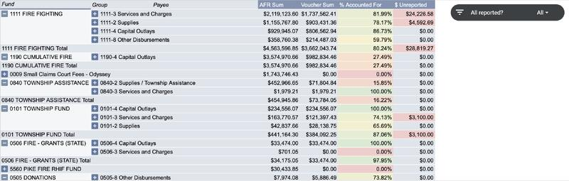
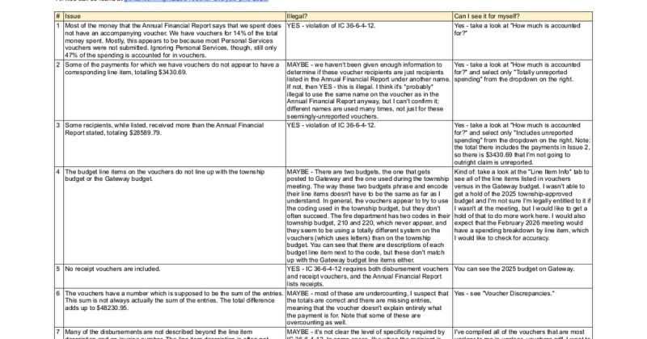
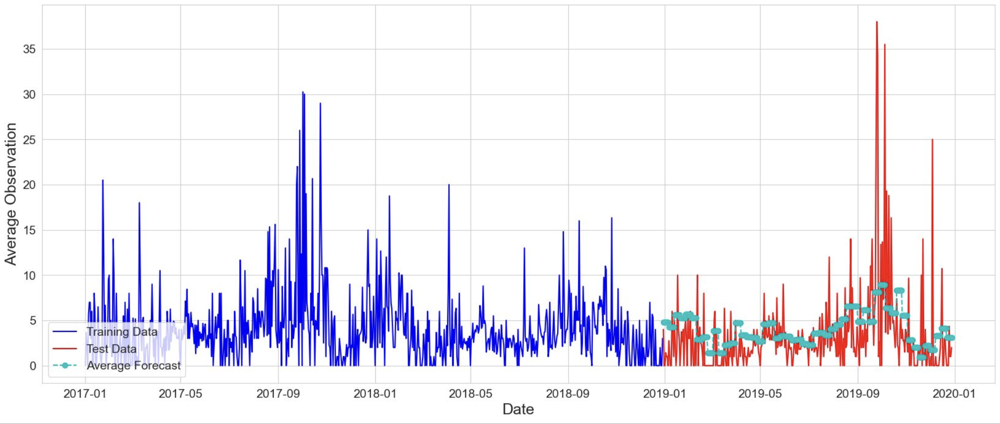
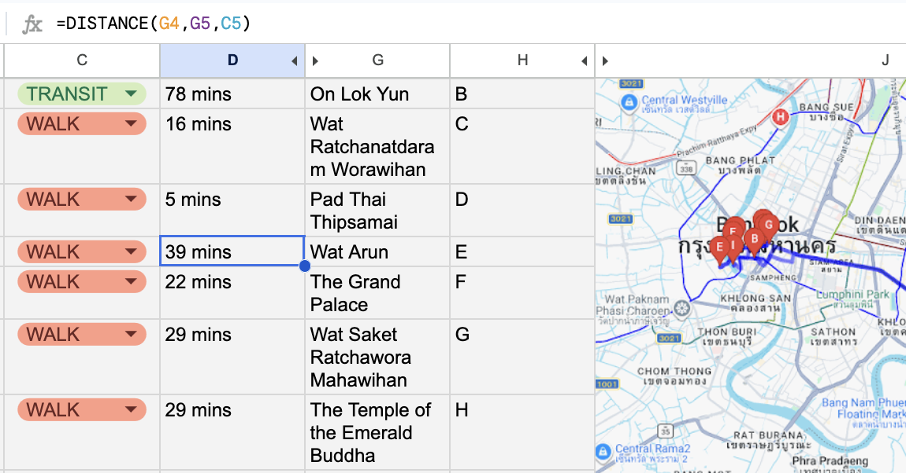
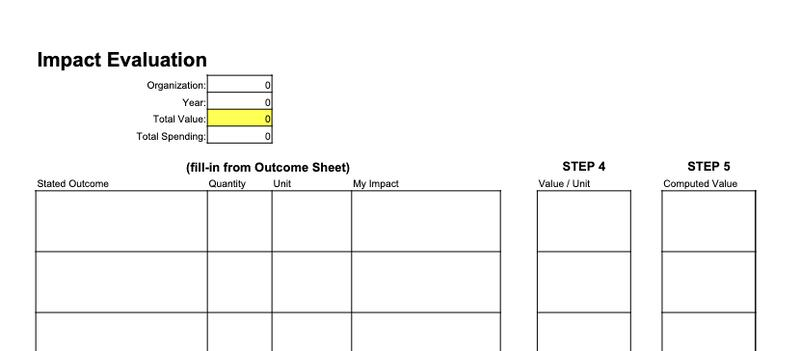
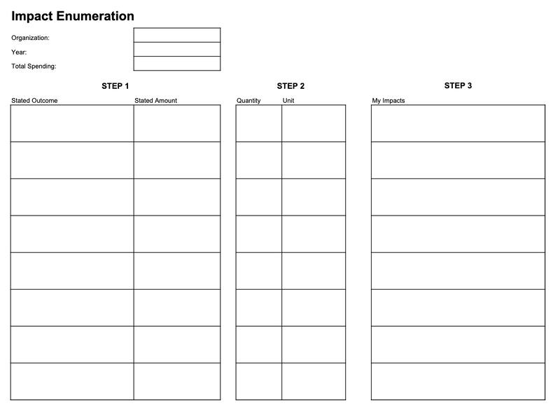
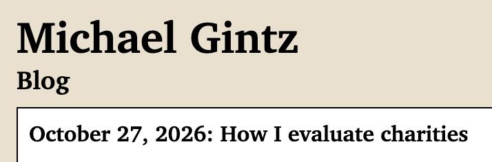

Michael Gintz
LinkedIn | GitHub | Email
Education
Previous Employment
Actuarial Science Credentials and Courses
Leadership and Teamwork Experience
★ Projects ★
-
University of Illinois Chicago (UIC) (2026), Ph.D. in Mathematics. Advised by Kevin Tucker. Graduated with a GPA of 4.00.
-
Princeton University (PU) (2022), A.B. in Mathematics, Certificate in Linguistics. Graduated with a GPA of 3.83.
-
Lewis & Ellis, Actuarial Intern (Summer 2026). Assisted with the bid review process for over 800 Medicare Advantage plans under a U.S. federal regulator contract, working one-on-one with an actuary for one set of plans and on a team of 9 for another. Investigated actuarial claims and calculations, processing data using VBA, Access, and Excel. Supported other employee projects, including a letter of policy recommendation and various data-wrangling tasks.
-
UIC (2022 - 2026). Performed original research which was then published. Taught, designed, and acted as a teaching assistant for various courses. Worked at a summer day-camp for high-school students.
-
Pre-Doctoral Fellow / Graduate Research Assistant (2023 - 2026, Seasonal). Conducted original research in algebra, including a preprint posted to arXiv and a co-authored published paper. Received support from NSF awards 2037569 and 1752081, and contributed to the project receiving NSF award 2200716.
-
Instructor of Record (2023 - 2025, Seasonal). Acted as the instructor of record for 3 courses.
-
Emerging Scholars Workshop for Analysis I (Fall 2025). Taught a support course for Analysis I with roughly 20 students 2 times a week. Made worksheets for each class.
-
Experience UIC (Fall 2024). Taught a course designed to support transition to university life with roughly 20 students 2 times a week.
-
Emerging Scholars Workshop for Calculus II (Fall 2023). Taught a workshop for Calculus II with roughly 20 students 2 times a week. Made worksheets for each class.
-
Teaching Assistant (2022 - 2025, Seasonal). Led 11 semester-long classroom discussions for Calculus 1, Calculus 2, Calculus 3, and College Algebra.
-
Instructor, Young Scholars Program (Summer 2024). Gave multiple lectures, ran problem and activity sessions, and helped supervise roughly 60 students at a time for a free 4-week summer day camp for Chicago area high school students.
-
Canada/USA Mathcamp (2019, 2022, Seasonal). A 5-week summer camp with roughly 125 mathematically gifted grade-school campers.
-
Head JC (Summer 2022). Co-led a logistics team of 9 undergraduates. Used Google's analogs of Excel and Javascript-based analog of VBA to manage flights and housing, negotiate with bus companies, administer medication, and organize and advertise events.
-
JC (Summer 2019). Organized events such as weekly competitions, off-campus field trips, and a talent show. Managed over 90 flights to and from camp and prepared housing for over 30 invited guests. Acted as a residential advisor. Created and taught a one-week course on elliptic curves.
-
Society of Actuaries (SOA) Exams
- Probability (2025). Passing score of 9. First attempt.
- Financial Mathematics (2025). Passing score of 8. First attempt.
- Statistics for Risk Modeling (2026). Passing score of 6. First attempt.
-
All SOA Validation by Educational Experience (VEE) course requirements
- Economics: Introduction to Macroeconomics (PU ECO 101, 2018, A-), Introduction to Microeconomics (PU ECO 100, 2019, A)
- Accounting and Finance: Introduction to Accounting (UIC ACTG 210, 2025, A), Investments (UIC FIN 310, 2025, A), Managerial Finance (UIC FIN 320, 2025, A),
- Mathematical Statistics: Statistical Theory (UIC STAT 411, 2025, A). A graduate-level course.
-
TheInfiniteActuary Technical Skills Courses: Predictive Analytics Intro, Technical Foundations (2026). Includes training in R and Python.
-
Directed Reading Program at UIC (2023 - 2025). Co-founded a program which has now facilitated 50 one-on-one graduate-undergraduate reading projects. Mentored 2 students personally.
-
PU Mathematics Competition (2018 - 2019). A high school math contest.
-
Problem Czar (2019). Co-managed a team of roughly 10 people who wrote problems for a high school math contest with roughly 500 competitors. Facilitated a trip to write and run a similar contest in Shanghai.
-
Assistant Problem Czar (2018). Wrote problems and compiled the combinatorics round.
-
Voucher Analysis of Pike Township for 2025 (2026). Analyzed payment reporting inconsistencies in a township in Indiana. Used Python via Claude's free offering for data extraction, and pivot tables to communicate results. Main workbook including results and methodology information. GitHub repository with auxiliary files.


-
Weather-based Bird Travel Predictor (2024). Predicted day-to-day bird movement using weather data and Python's scikit-learn for the Erdős Institute Data Science Boot Camp, a program for STEM PhD students. Boot camp certificate and links to more information.

-
Route Planner (2025). Used Google Apps Script and Google Maps API to quickly evaluate multiple possible travel routes to reach pre-set destinations by computing travel times and generating route maps. Demonstration.

-
Impact Workbook (2026). Wrote a blog post and collection of worksheets (in both digital and analog forms) designed to foster thoughtful consideration of philanthropic impact. Blog post. Instruction manual and link to worksheets.


